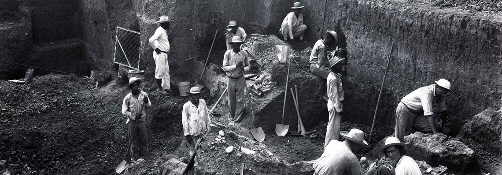

Sitio Conte
Located in central Panama, the Rio Grande de Coclé floods during the rainy season. In the early 20th century, the Conte family noticed that the shifting course of the river was exposing ancient burials on the river’s edge. During the 1930s, the Peabody Museum excavated the now-famous Sitio Conte (Conte Site) and found archaeological evidence of a large cemetery including an impressive burial of a chief that had been buried with lots of gold and numerous other individuals. The evidence, although dating to the late 1st millennium CE, seemed to corroborate Spanish accounts of events and rituals surrounding the burial of powerful chiefs for the Quevi culture in the late 16th century CE.
Prominent Graves
Grave 1 is considered to be one of the more prominent unearthed during the Peabody excavation. It dates to AD 400-500. Those who were interred have been interpreted to be a "chief and three of his retainers". The primary occupant, skeleton 1, was interred in a seated position and lavishly adorned with grave goods. Among these were eight effigy vessels and 112 plates or bowls, all of which were spread along the edge of the grave.
Also included were gold or tumbaga beads, pendants, greaves and chisels, a canine teeth apron, mirror backs, whale teeth and carved manatee ribs with gold overlay, seventeen hundred serpentine beads and several bundles of stingray spines. Skeleton two also had many of these same objects in association, as well as a small quantity of celts and stone blades. The remaining skeletons had similar grave goods, although fewer in number.
Grave 26. One of the richest graves of the Peabody excavations, Grave 26 contained 22 skeletons and dates to the same period as Grave 5. The primary occupant, skeleton 12, was interred in a seated position and was once enclosed in a makeshift hut. Forming the floor of the grave were a number of ceramics, a stone slab and the remainder of the grave's occupants.occupants.
Some of the grave goods that are associated with the primary interment include gold or tumbaga plaques, cuffs, greaves, beads, carved whale teeth and manatee ribs, stingray spines and an emerald. Of the 126 ceramic pieces found in Grave 26, a majority of them lined the walls of the grave. These included thirty-six effigy vessels and ninety polychrome plates. The other occupants had a few grave goods, including several gold ear rods, which were associated with Skeleton 8
The Art of Sitio Conte
The iconography of the gold and ceramic pieces at Sitio Conte reflects a highly refined artistry. While some figures are abstract representations of animals, others appear to be therianthropic in nature. These figures mostly appear in two basic designs, single or paired. There are exceptions to this as some ceramics contain multiple images as well.
The iconography of the gold pieces varies from animals such as bats, deer, sharks, crocodiles, and saurians to human and therianthropic figures. Many of these subjects are represented in the iconography of the Coclé style ceramics that appear within the burials. They also include images of snakes, birds, turtles, crabs, insects, frogs, stingrays, armadillos and monkeys. It has been suggested that the inclusion of these gold and ceramic pieces may represent the rank of the individuals with whom they are associated